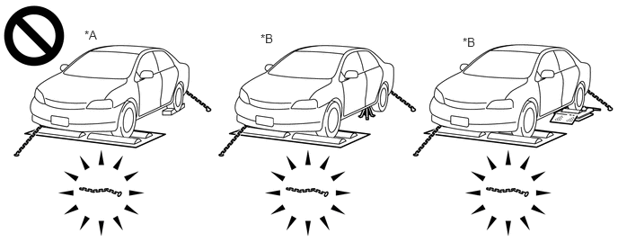
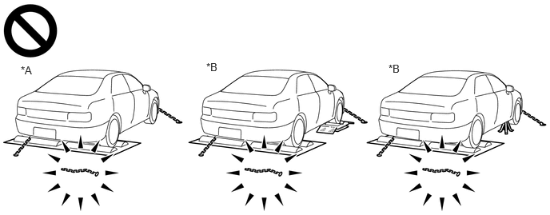
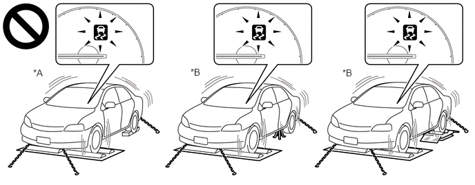
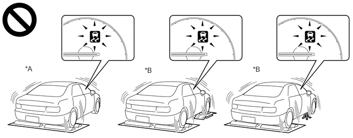

- For inspecting ignition timing, performing engine maintenance, idle speed exhaust emissions testing (CO, HC), etc.
- For performing tests using a speedometer tester, two-wheel chassis dynamometer, etc.
| Last Modified: 10-07-2025 | 6.11:8.1.0 | Doc ID: RM100000002HFUR |
| Model Year Start: 2024 | Model: Tacoma | Prod Date Range: [12/2023 - ] |
| Title: INTRODUCTION: REPAIR INSTRUCTION: INSPECTION MODE PROCEDURE; 2024 - 2026 MY Tacoma Tacoma HV [12/2023 - ] | ||
INSPECTION MODE PROCEDURE
INSPECTION MODE
(a) for Gasoline Model, Diesel Model, LPG Model:
The following table shows the types of inspection mode that are available, their purpose and the control that occurs in mode.
|
Utility Items |
Main Purpose |
Control |
|---|---|---|
|
Inspection Mode |
For performing tests using a speedometer tester, two-wheel chassis dynamometer, four-wheel chassis dynamometer, etc. |
Cancels TR(A)C and VSC systems |
(b) for HEV Model:
NOTICE:
When operating the vehicle in an inspection mode for an operation such as a speedometer test, a DTC may be stored. Therefore, if the warning light illuminates, check for DTCs using the GTS and clear the DTCs.
HINT:
If the engine is warmed up and the HV battery is charged, the engine will stop after the vehicle is stopped. If the engine is required to run continuously even after the vehicle is stopped, such as for an ignition timing check, switch to maintenance mode.
The following table shows the types of inspection mode that are available, their purpose and the control that occurs in each mode.
|
Mode (Display) |
Purpose |
Control |
|---|---|---|
|
2WD MAINTENANCE MODE (2WD for measuring Exhaust Gas) |
|
|
|
2WD CERTIFICATION MODE (2WD for cutting TR(A)C) |
For performing tests using a speedometer tester, two-wheel chassis dynamometer, etc. |
|
|
4WD/AWD MAINTENANCE MODE (4WD for measuring Exhaust Gas) |
|
|
|
4WD/AWD CERTIFICATION MODE (4WD for cutting TR(A)C) |
For performing tests using a speedometer tester, four-wheel chassis dynamometer, etc. |
Cancels traction control |
(c) Vehicle conditions (for HEV Model)
(1) Before activating inspection mode, turn the air conditioning off, start the hybrid system with the shift lever in P or with park (P) selected, and check that the engine stops within several seconds after starting (engine warm up check).
(2) Activate the appropriate inspection mode and inspect the vehicle:
|
Test Item |
Mode |
|---|---|
|
Vehicle straight traveling test (side slip inspection) |
2WD MAINTENANCE MODE, 4WD/AWD MAINTENANCE MODE or normal mode |
|
Braking force test |
Normal mode |
|
Speedometer test |
2WD MAINTENANCE MODE or 4WD/AWD MAINTENANCE MODE |
|
Exhaust gas test (idling) |
2WD MAINTENANCE MODE or 4WD/AWD MAINTENANCE MODE |
|
Headlight test |
2WD MAINTENANCE MODE, 4WD/AWD MAINTENANCE MODE or normal mode |
(3) Cancel inspection mode immediately after completing the inspection.
NOTICE:
Driving the vehicle without canceling inspection mode may damage the hybrid transaxle or the hybrid transmission.
(d) Precautions when performing speedometer test (for HEV Model)
CAUTION:
Be sure to perform the test in 2WD MAINTENANCE MODE or 4WD/AWD MAINTENANCE MODE.
NOTICE:
Do not perform rapid starting or quick acceleration on a speedometer tester. If rapid starting or quick acceleration is performed on a speedometer tester, damage may occur to the hybrid transaxle or the hybrid transmission.
(1) Depress the accelerator pedal slowly and gradually accelerate the vehicle. Take a measurement.
(2) After the measurement, use the brakes to gradually decelerate the vehicle.
(e) Special notes for using a chassis dynamometer (for HEV Model)
CAUTION:
Be sure to perform the test in 2WD MAINTENANCE MODE or 4WD/AWD MAINTENANCE MODE.
NOTICE:
Sudden acceleration or deceleration of the vehicle on a chassis dynamometer under minimal load may damage the hybrid transaxle or the hybrid transmission.
(1) Always set an appropriate load before starting the test.
(f) Activation of the parking support brake, TR(A)C, or VSC may eject the vehicle from the drum tester such as speedometer tester, brake tester and chassis dynamometer. When using the drum tester, make sure to perform the following and disable the parking support brake, TR(A)C and VSC.
- Turn the parking support brake off.
- Enter Inspection Mode or VSC OFF mode.
CAUTION:
- Do not use the drum tester with any of the lock
chains disconnected.
Transaxel Type:
*A
for FRONT WHEEL DRIVE VEHICLES/2WD
*B
for 4WD/AWD
Transmission Type:
*A
for REAR WHEEL DRIVE VEHICLES/2WD
*B
for 4WD/AWD
- Using the drum tester with a lock chain disconnected could cause the vehicle to begin moving unexpectedly.
- Do not use the drum tester when the parking
support brake, TR(A)C and VSC are active.
TransAxel Type:
*A
for FRONT WHEEL DRIVE VEHICLES/2WD
*B
for 4WD/AWD
TransMission Type:
*A
for REAR WHEEL DRIVE VEHICLES/2WD
*B
for 4WD/AWD
- Activation of the parking support brake, TR(A)C, or VSC may eject the vehicle from the drum tester.
ACTIVATING INSPECTION MODE (for Gasoline Model, Diesel Model, LPG Model)
(a) Activating Inspection Mode (WHEN USING THE GTS)
NOTICE:
- Inspection Mode will be canceled when the ignition switch is turned off. Make sure to enter Inspection Mode again if the inspection is continued after the ignition switch is turned off.
- Never drive the vehicle while in Inspection Mode.
HINT:
When the system is in Inspection Mode, TR(A)C and VSC are disabled.
(1) Turn the ignition switch off.
(2) Connect the GTS to the DLC3.
(3) Turn the ignition switch to ON.
(4) Turn the GTS on.
(5) Enter the following menus Inspection Mode.
(6) for Multi-information Display Type:
Check that the VSC OFF indicator light comes on and "TR(A)C OFF message" is displayed on the multi-information display (Confirm that the system has entered Inspection Mode).
(7) except Multi-information Display Type:
Check that the TR(A)C OFF indicator light and VSC OFF indicator light come on (Confirm that the system has entered Inspection Mode).
(b) Activating Inspection Mode (WHEN NOT USING THE GTS)
NOTICE:
- Inspection Mode will be canceled when the ignition switch is turned off. Make sure to enter Inspection Mode again if the inspection is continued after the ignition switch is turned off.
- Never drive the vehicle while in Inspection Mode.
(1) Perform steps "D" to "H" within 30 seconds.
(2) Ensure that the ignition switch is off and the engine is stopped (Step "A").
(3) Apply the parking brake (Step "B").
(4) except Manual Transmission/Transaxle
Make sure that the shift lever is in P (Step "C").
(5) for Manual Transmission/Transaxle
Make sure that the shift lever is in neutral (Step "C").
(6) Start the engine (Step "D").
(7) Depress and release the brake pedal twice (Step "E").
(8) While holding the brake pedal down, release and apply the parking brake twice (Step "F").
(9) With the parking brake applied, depress and release the brake pedal twice (Step "G").
(10) for Multi-information Display Type:
Check that the VSC OFF indicator light comes on and "TR(A)C OFF message" is displayed on the multi-information display (Step "H").
HINT:
- If the VSC OFF indicator light does not come on and "TR(A)C OFF message" is not displayed on the multi-information display in step "H", repeat steps "A" to "H".
- When entering Inspection Mode, the parking brake indicator light (red) will blink in the Dealer Mode pattern (blinking at 0.25-second intervals).
(11) except Multi-information Display Type:
Check that the TR(A)C OFF indicator light and VSC OFF indicator light come on (Step "H").
HINT:
If the TR(A)C OFF indicator light and VSC OFF indicator light do not come on in step "H", repeat steps "A" to "H".
(c) End of Inspection Mode.
(1) Turning the ignition switch off ends Inspection Mode.
NOTICE:
If the ignition switch is turned to ON within 60 seconds of being turned off, the system will reenter Inspection Mode.
(2) for Multi-information Display Type:
Confirm that the VSC OFF indicator light turns off and the "TR(A)C OFF message" on the multi-information display is cleared (Confirm that Inspection Mode is canceled).
(3) except Multi-information Display Type:
Confirm that the TR(A)C OFF indicator light and VSC OFF indicator light turn off (Confirm that Inspection Mode is canceled).
ACTIVATING 2WD MAINTENANCE MODE (for HEV Model)
HINT:
- Refer to the New Car Features manual for the warning messages which are displayed on the multi-information display when maintenance mode is entered.
- The engine speed increases to 1500 rpm when the accelerator pedal is depressed midway with the shift lever is in P or park (P) selected. When the accelerator pedal is depressed more than midway, or when the accelerator pedal is fully depressed, the engine speed will increase to approximately 2500 rpm.
(a) NOT USING THE GTS
(1) Perform the following steps within 60 seconds.
- Turn the ignition switch to ON.
- Move the shift lever to P or select park (P) and fully depress the accelerator pedal twice.
- Move the shift lever to N or select neutral (N) and fully depress the accelerator pedal twice.
- Move the shift lever to P or select park (P) and fully depress the accelerator pedal twice.
(2) Start the engine by turning the ignition switch ON (READY) while depressing the brake pedal.
(3) Check that the 2WD maintenance mode message is displayed on the multi-information display.
(b) USING THE GTS
(1) Connect the GTS to the DLC3.
(2) Turn the ignition switch to ON.
(3) Turn the GTS on.
(4) Enter following menus: Powertrain / Hybrid Control / Utility / Inspection Mode - 2WD for measuring Exhaust Gas.
(5) Start the engine by turning the ignition switch ON (READY) while depressing the brake pedal.
(6) Check that the 2WD maintenance mode message is displayed on the multi-information display.
HINT:
Refer to the New Car Features manual for the warning messages which are displayed on the multi-information display when certification mode is entered.
ACTIVATING 2WD CERTIFICATION MODE (for HEV Model)
(a) NOT USING THE GTS
(1) Perform the following steps within 60 seconds.
- Turn the ignition switch to ON.
- Move the shift lever to P or select park (P) and fully depress the accelerator pedal 3 times.
- Move the shift lever to N or select neutral (N) and fully depress the accelerator pedal 3 times.
- Move the shift lever to P or select park (P) and fully depress the accelerator pedal 3 times.
(2) Turn the ignition switch ON (READY) while depressing the brake pedal.
(3) Check that the 2WD certification mode message is displayed on the multi-information display.
(b) USING THE GTS
(1) Connect the GTS to the DLC3.
(2) Turn the ignition switch to ON.
(3) Turn the GTS on.
(4) Enter following menus: Powertrain / Hybrid Control / Utility / Inspection Mode - 2WD for cutting TR(A)C.
(5) Turn the ignition switch ON (READY) while depressing the brake pedal.
(6) Check that the 2WD certification mode message is displayed on the multi-information display.
HINT:
- Refer to the New Car Features manual for the warning messages which are displayed on the multi-information display when maintenance mode is entered.
- The engine speed increases to 1500 rpm when the accelerator pedal is depressed midway with the shift lever is in P or park (P) selected. When the accelerator pedal is depressed more than midway, or when the accelerator pedal is fully depressed, the engine speed will increase to approximately 2500 rpm.
ACTIVATING 4WD/AWD MAINTENANCE MODE (for HEV Model)
(a) NOT USING THE GTS
(1) Perform the following steps within 60 seconds.
- Turn the ignition switch to ON.
- Move the shift lever to P or select park (P) and fully depress the accelerator pedal 4 times.
- Move the shift lever to N or select neutral (N) and fully depress the accelerator pedal 4 times.
- Move the shift lever to P or select park (P) and fully depress the accelerator pedal 4 times.
(2) Start the engine by turning the ignition switch ON (READY) while depressing the brake pedal.
(3) Check that the 4WD/AWD maintenance mode message is displayed on the multi-information display.
(b) USING THE GTS
(1) Connect the GTS to the DLC3.
(2) Turn the ignition switch to ON.
(3) Turn the GTS on.
(4) Enter following menus: Powertrain / Hybrid Control / Utility / Inspection Mode - 4WD for measuring Exhaust Gas.
(5) Start the engine by turning the ignition switch ON (READY) while depressing the brake pedal.
(6) Check that the 4WD/AWD maintenance mode message is displayed on the multi-information display.
ACTIVATING 4WD/AWD CERTIFICATION MODE (for HEV Model)
HINT:
Refer to the New Car Features manual for the warning messages which are displayed on the multi-information display when certification mode is entered.
(a) NOT USING THE GTS
- Turn the ignition switch to ON.
- Move the shift lever to P or select park (P) and fully depress the accelerator pedal 5 times.
- Move the shift lever to N or select neutral (N) and fully depress the accelerator pedal 5 times.
- Move the shift lever to P or select park (P) and fully depress the accelerator pedal 5 times.
(1) Turn the ignition switch ON (READY) while depressing the brake pedal.
(2) Check that the 4WD/AWD certification mode message is displayed on the multi-information display.
(b) USING THE GTS
(1) Connect the GTS to the DLC3.
(2) Turn the ignition switch to ON.
(3) Turn the GTS on.
(4) Enter following menus: Powertrain / Hybrid Control / Utility / Inspection Mode - 4WD for cutting TR(A)C.
(5) Turn the ignition switch ON (READY) while depressing the brake pedal.
(6) Check that the 4WD/AWD certification mode message is displayed on the multi-information display.
DEACTIVATING INSPECTION MODE (for HEV Model)
(a) Turn the ignition switch off and wait at least 30 seconds. The hybrid system will turn off simultaneously.
NOTICE:
After deactivating inspection mode, turn the ignition switch to ON and check that the corresponding message is no longer displayed on the multi-information display.